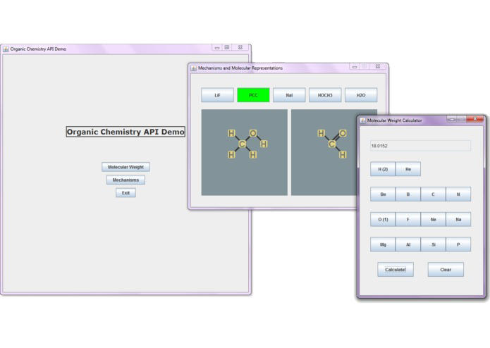

Undeniably and increasingly so, computer science holds incredible implications for medicine. We believe that the best way to understand this budding relationship is to represent chemical building blocks, namely atoms and molecules, and to leverage a variety of established computer science algorithms and intuition to interact with these representations. The ability to establish such parallels between these two fields as demonstrated in this API and demonstration suggests promising possibilities in both STEM education, the health industry, and research.

We have provided an API which will allow users to use our molecular representations for further projects. Of particular importance is the Molecule class, which stores a collection of Atoms, linking/bonding them together via a graph data structure. The Molecule class provides a wide variety of utilities that can be assembled together for more complicated chemical processing.
We also provide a demonstration, which can be launched via Main.java. Here, we provide two example uses of our API. The first is a tool for calculating the molecular weight of a molecule. The second is a demonstration and tutorial of organic chemistry reaction mechanisms. By choosing a reagent button, the user can see how a starting reactant (displayed as the left diagram) is chemically manipulated by the reagent to form a product (right diagram). It is worth noting that the reactant (left) is loaded as a sample molecule, but the product (right) was determined from the reactant representation and the utilities available in the API. These reaction mechanisms can be functional on custom, user-inputted molecules.
We used Java for the entirety of the project, taking advantage of its Object-Oriented nature to create data structures and its Graphics API to create our demonstration.
We attempted to deploy our demonstration to a web browser via JSon, Maven, JavaScript, Spark, etc. but were unable to complete this challenge at this time.
We also found it difficult (but definitely possible!) to include stereochemical information within our molecular representations. The most challenging aspect of this is determining the order of significance of each branching group and devising a graph traversal technique to accomplish this.
We are proud of our success in manipulating starting reactants using reagents to generate accurate products in our reaction mechanism demonstration. This success suggests that there is great potential for the continued development of this API and additional applications of it.
We chose to take on an extremely far-reaching project (attempting to merge two wealths of knowledge in two extremely challenging fields.) There are complexities that arise in both computer science and chemistry and we learned that finding solutions that weave through these obstacles can be difficult. We also learned that it is better to narrow the project scope early on so that the project is focused in purpose. Finally, we learned to find the balance between exploring unknown realms of computer science and sticking to methods and techniques that we understand and are confident in.
The improvement of the representation of stereochemistry in molecules is the next goal because this piece of data is incredibly important in chemistry; it impacts what reagents should be used and can even distinguish between two molecules that seem similar but possess wildly unique characteristics and properties.
Once this API is further developed, it can be used as a foundation to develop for the biotech and health industries. This API can also be used as a tool for teaching both organic chemistry and computer science.
Ultimately, we are excited to present this project because it exploits a beautiful symmetry between two incredibly complicated fields.
I thank Debbie Pao for partnering to develop this project.